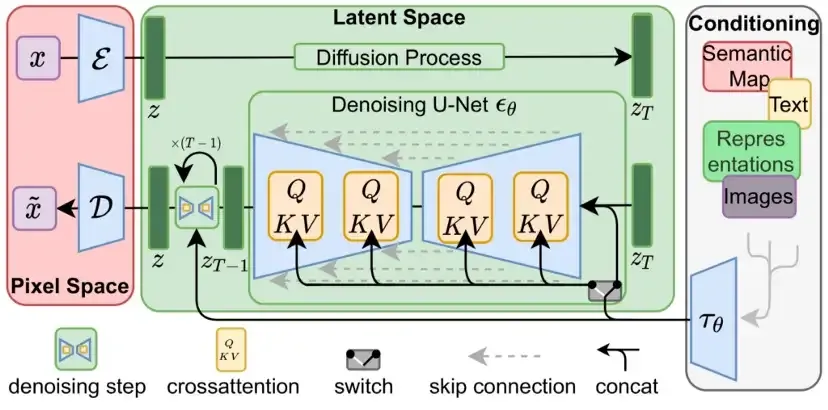

Difussion : Latent Diffusion
High-Resolution Image Synthesis with Latent Diffusion Models
Stable Diffusion
High-Resolution Image Synthesis with Latent Diffusion Models
https://github.com/CompVis/stable-diffusion
Latent Diffusion ModelCross-Attention based Conditioningtext to image
pixcel이 아닌 latent space에서 diffusion model을 돌려서 computational cost를 많이 줄였다. 그런데 난 이 모델이 더 매력적인 부분은 cross attention으로 general한 conditioning input을 받는다는 점이다. 이로써 text 로도 gudience를 줄 수 있다는 점이 매우 감동이었다..
Guided Diffusion
Stable Diffusion을 보기전에 Guided Diffusion이 무엇인지 알아야한다.
Sampling process에 condition을 줘서 generate되는 sample들을 조작할 수 있다. 즉 generation을 guide한다. 즉 prior data distribution p(x)에 condition y를 줘서 p(x|y)가 되는것이고 conditional diffusion은 각 diffusion step에 condition info를 더해준다 생각하면 되고 이로써 image나 text를 넣을 수 있게 된다.
$$ p_{\theta}(x_{0:T}|y) = p_{\theta}(x_T)\Pi_{t=1}^Tp_{\theta}(x_{t-1}|x_t,y) $$
이렇게 하면 우리가 text y를 input으로 모델에 줄 수 있다.
Diffusion model은 SDE로 표현할 수 있고 그래서 guided diffusion model은 $\nabla \log p_{\theta}(x_t|y)$를 배우고자 하고 Bayes Rule에 의해
$$ \nabla_{x_t} \log p_{\theta}(x_t|y) = \nabla_{x_t} \log (\frac{p_{\theta}(y|x_t)p(x_t)}{p_{\theta}(y)}) \ = \nabla_{x_t} \log p_{\theta}(x_t) + \nabla_{x_t} \log p_{\theta}(y|x_t) $$
로 정리 된다. 여기서 guidance scalar term을 추가해 주면
Classifier guidance
$$
\nabla_{x_t} \log p_{\theta}(x_t|y) =\nabla_{x_t} \log p_{\theta}(x_t) + \gamma \cdot\nabla_{x_t} \log p_{\theta}(y|x_t) $$
이 식의 두번째 텀을 다시 Bayes Rule을 써서 정리하면
Classifier Free guidance
Classifier-Free Diffusion Guidance
$$ \nabla_{x_t} \log p_{\theta}(x_t|y) = (1-\gamma)\nabla_{x_t} \log p_{\theta}(x_t) + \gamma \cdot\nabla_{x_t} \log p_{\theta}(x_t|y) $$
⇒ $\tilde{\epsilon}(z_\lambda,c) = (1+w)\epsilon_\theta(z_\lambda,c) - w\epsilon_\theta(z_\lambda)$
Latent Diffusion의 conditioning은 Classifier free guidance
⭐ $\epsilon_\theta(x_t,c) = s\epsilon_{cond}(x_t,c) + (1-s)\epsilon_{cond}(x_t,c_u)$
⭐
으로 formulate하고 여기서 $c_u$는 empty prompt에 대한 conditional embedding
Architecture

CLIP Text
- Text understanding component
- for Text Encoding
- Transformer language model
U-Net + Scheduler
- Information creator
- latent space ⇒ faster
Autoencoder Decoder
- Image Decoder